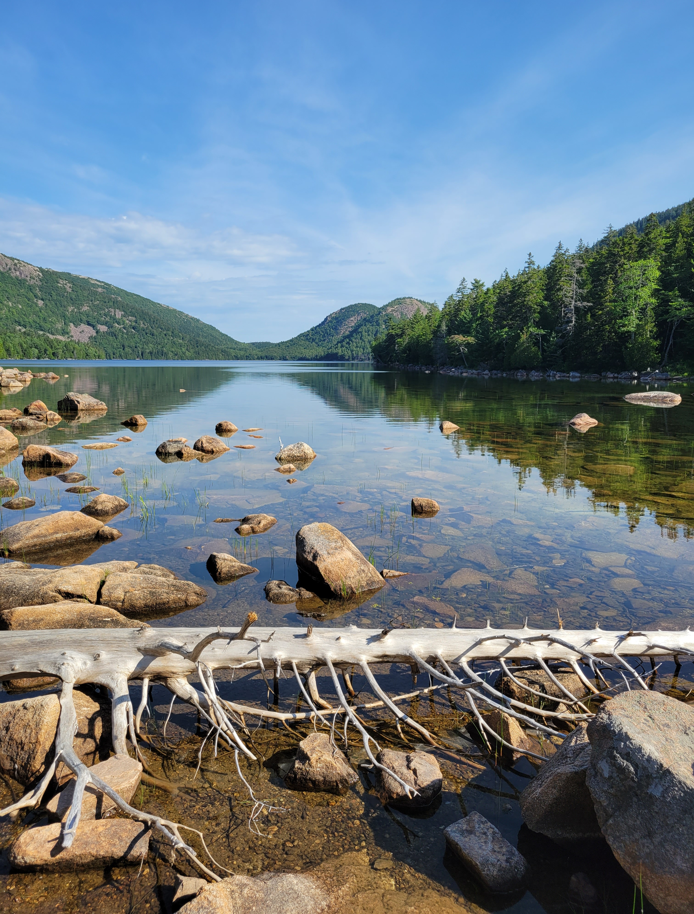

Hi! My name is Dylan Coon and I am from Erie, Pennsylvania. I’m a software engineer with a strong foundation in computer science and a passion for solving complex problems. I graduated from Penn State University with a degree in Computer Science and a minor in Mathematics, where I built a deep understanding of algorithms, systems, and logical thinking — skills I apply daily in my work and personal projects.

Taken in Acadia National Park
Currently, I’m a software engineer at Iron Mountain, where I work as software engineer on a application support team. I spend most of my time on the job writing python scripts to automate workflows in the team. I enjoy working with data, writing clean and efficient APIs, and diving into the kind of technical challenges. My main interests and ambitions lie in backend development, distributed systems, and machine learning, and I’m always exploring new tools and technologies to deepen my understanding.
My dog Yankee
Outside of work, I like to be outside and spend time with my dog Yankee. I am also an avid rock climber — I love the mental and physical puzzle that each climb presents. It’s a great complement to my love of problem-solving in software. Whether it’s debugging a tricky issue or finding the optimal route up a boulder, I’m always looking for the next challenge to take on and learn from.